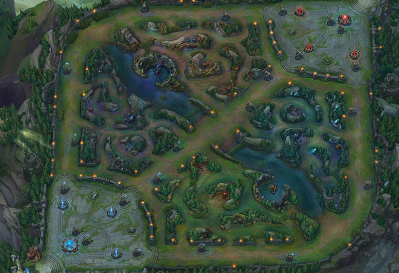

comment marche league of legends ?
League of legends est un Jeux Vidéo en ligne de type MOBA (Multiplayer Online Battle Arena)
dans le jeu, deux équipes de 5 joueurs s'affronte sur une carte nommé la faille de l'invocateur

chaque joueur part du point de départ à chaque extremité de la carte selon son équipe, la "fontaine" et se déploie sur l'une des 3 lignes qu'on appelle les voies ou "lane" plus communément, ou alors, entre celle ci, dans un espace nommé la jungle délimité par la rivière qui tranche la carte en deux.
chaque lane est nommé selon son emplacement sur la carte, la voie du haut, du milieu et du bas, sur chaque voie on peut retrouver différents types de champion, des combattants ou des tanks en haut, des mages ou des assassins au milieu et tireurs et supports en bas. la voie du bas à pour spécificité d'acceuillir deux joueurs au lieu d'un voilà pourquoi on y retrouvera le plus souvent un personnage fragile mais puissant aider d'un support pour prendre les dégats ou soigner son allié. dans la jungle la classe du champion importe peu, un champion est adapté à la jungle si son kit lui permet d'être éfficace dans se rôle.
le but du jeu est de détruire la base adverse, pour cela il faut d'abord détruire les tourelles sur les différentes voies, puis les inhibiteurs qui protègent les dernières tourelles, puis le nexus. losque le nexus explose la partie est fini
au cours de la partie, les joueurs amassent de l'or et de l'expérience en tuant les sbires qui arrive sur les lanes, en tuant les monstres de la jungle,ou en tuant les joueurs adverses. Avec cet or ils achètent des objets ce qui leur permet de progresser dans la partie, un personnage ayant amassé beaucoup d'or sera naturellement plus puissant qu'un personnage qui ne l'a pas fait. l'expérience permet de faire monter de niveau votre personnage, ainsi à chaque niveau vous pourrez améliorer une de vos compétences. de manière général, un personnage dispose de 3 compétences de base ainsi que d'une compétence ultime déblocable au niveau 6,pour mieux comprendre toutes ses notions, vous pouvez effectuer le didacticiel directement sur le jeu, qui vous permettra de comprendre tout cela en l'appliquant.
maintenant que tu as compris tu peux cliquer sur le bouton ci dessous pour commencer le quiz
trouver mon champion